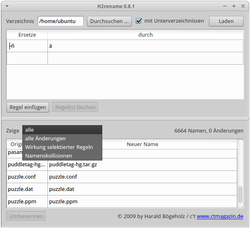

H2rename
Dieser Artikel wurde für die folgenden Ubuntu-Versionen getestet:
Ubuntu 16.04 Xenial Xerus
Ubuntu 14.04 Trusty Tahr
Zum Verständnis dieses Artikels sind folgende Seiten hilfreich:
H2rename  ist ein grafisches Hilfsmittel zum Umbenennen von Dateien. Das Programm ist insbesondere dann praktisch, wenn man eine Windows-Partition mit falschen Optionen eingebunden hatte. Problematisch sind z.B. Dateien mit Umlauten im Namen, die beim Kopieren verloren gehen können – wenn man den ursprünglichen Zeichensatz nicht kennt. Es wurde 2009 im Rahmen eines Qt-Programmierprojekts der Zeitschrift c't geschrieben.
ist ein grafisches Hilfsmittel zum Umbenennen von Dateien. Das Programm ist insbesondere dann praktisch, wenn man eine Windows-Partition mit falschen Optionen eingebunden hatte. Problematisch sind z.B. Dateien mit Umlauten im Namen, die beim Kopieren verloren gehen können – wenn man den ursprünglichen Zeichensatz nicht kennt. Es wurde 2009 im Rahmen eines Qt-Programmierprojekts der Zeitschrift c't geschrieben.
H2rename ist freie Software und unterliegt der Lizenz GPL Version 3. Es kann neben GNU Linux auch unter Windows und Mac OS X eingesetzt werden. Eine Alternative ist das Kommandozeilenprogramm convmv.
Installation¶
 Das Programm ist nicht in den offiziellen Paketquellen enthalten.
Das Programm ist nicht in den offiziellen Paketquellen enthalten.
Fremdpaket¶
Auf der Projektseite  finden sich Fremdpakete für 32- oder 64-bit-Systeme, die heruntergeladen und manuell installiert werden müssen [1].
finden sich Fremdpakete für 32- oder 64-bit-Systeme, die heruntergeladen und manuell installiert werden müssen [1].
Hinweis!
Fremdpakete können das System gefährden.
PPA¶
Alternativ zu den Fremdpaketen kann man auch ein "Personal Packages Archiv" (PPA) [2] nutzen. Unterstützt werden allerdings nur LTS-Versionen von Ubuntu.
Adresszeile zum Hinzufügen des PPAs:
ppa:aasche/h2rename
Hinweis!
Zusätzliche Fremdquellen können das System gefährden.
Ein PPA unterstützt nicht zwangsläufig alle Ubuntu-Versionen. Weitere Informationen sind der  PPA-Beschreibung des Eigentümers/Teams aasche zu entnehmen.
PPA-Beschreibung des Eigentümers/Teams aasche zu entnehmen.
Damit Pakete aus dem PPA genutzt werden können, müssen die Paketquellen neu eingelesen werden.
Nach dem Aktualisieren der Paketquellen kann folgendes Paket installiert werden [3]:
h2rename (ppa)
 mit apturl
mit apturl
Paketliste zum Kopieren:
sudo apt-get install h2rename
sudo aptitude install h2rename
Verwendung¶

Aufgerufen [4] wird das Programm bei Ubuntu-Varianten mit einem Anwendungsmenü über "Zubehör -> H2rename" oder via H2rename (mit großem H). Außer einer Verzeichnisauswahl sind keine weiteren Einstellungen nötig. Diese erfolgt über die Schaltfläche "Durchsuchen". Mit "Laden" landen die gefundenen Dateien im unteren Teil des Programmfensters.
Im oberen Teil werden dagegen die Regeln festgelegt, welche Zeichen gegen andere ausgetauscht werden sollen. Auf Wunsch können auch mehrere Bedingungen zusammengestellt werden, um möglichst viele Zeichen auf einmal ersetzen zu können. Dabei erleichtert eine Vorschaufunktion mit alten und neuen Dateinamen die Regeldefinition.
Besonders praktisch ist, dass Probleme mit deutschen Umlauten automatisch erkannt werden. Das konkrete Umbenennen der Dateien wird gestartet, wenn man die Schaltfläche "Umbenennen" unten links betätigt.
Links¶
H2rename
- im heise Software-VerzeichnisVerhunzte Dateinamen
- c't Hotline, Ausgabe 17/2009
UTF-8-Probleme - Wikipedia
Zeichensatz-Konverter
 Übersichtsartikel
Übersichtsartikel

- Erstellt mit Inyoka
-
 2004 – 2017 ubuntuusers.de • Einige Rechte vorbehalten
2004 – 2017 ubuntuusers.de • Einige Rechte vorbehalten
Lizenz • Kontakt • Datenschutz • Impressum • Serverstatus -
Serverhousing gespendet von